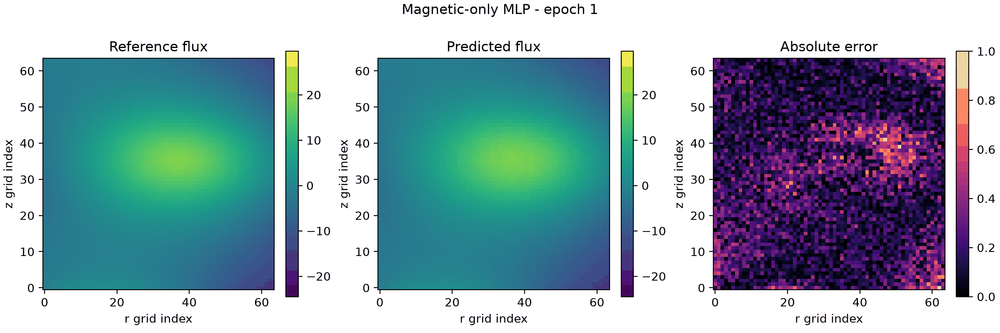
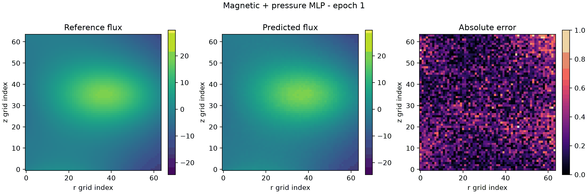
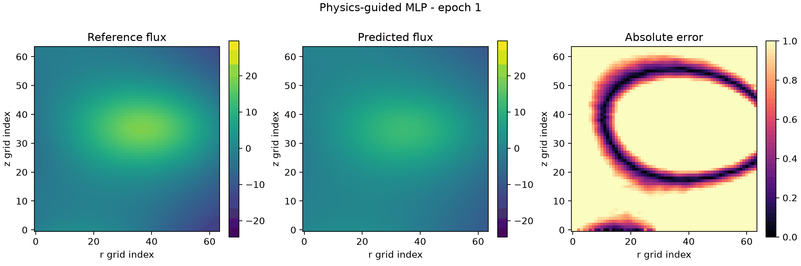
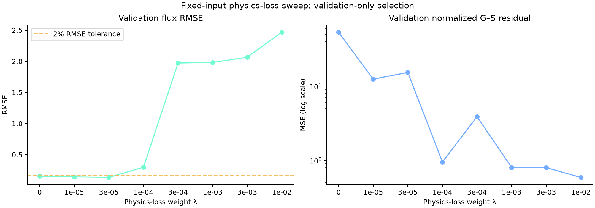

Experiment 01
Magnetic-only MLP
- 14 coil currents + 187 magnetic measurements
- Direct 64×64 flux-map output
- Flux-map MSE loss

- Test RMSE
- 0.1365
- Test R²
- 0.99963
- Best epoch
- 33
Fusion equilibrium surrogate experiment
ITER-like plasma-equilibrium reconstruction from public synthetic simulation data. The project separates extra-input effects from physics-loss effects, then selects the constraint weight using validation data only.
8,192 synthetic equilibria • 80 / 10 / 10 split • Validation-based early stopping
Experiment 01

Experiment 02

Experiment 03 Not selected

Controlled redesign
Every candidate used 14 coil currents, 187 magnetic measurements, and a 101-point pressure profile. The Grad–Shafranov weight λ was the only changed variable.

Validation flux RMSE
53.47Normalized G–S MSE
Validation flux RMSE
12.45Normalized G–S MSE
Flux RMSE
12.65Normalized G–S MSE
Selection rule: among candidates within 2% of the λ = 0 validation flux RMSE, choose the lowest validation physics residual. λ = 3e-5 had lower flux RMSE, but a higher residual, so λ = 1e-5 was selected before the test evaluation.
What the experiment established
The magnetic-only MLP remains the lowest-RMSE model among the initial held-out comparisons. Adding a pressure profile alone did not improve this compact model under the shared protocol.
The initial λ = 0.1 residual degraded flux accuracy. After fixing the inputs and selecting λ on validation data, λ = 1e-5 improved both the pressure-control validation RMSE and the normalized physics residual. This is a conditional improvement, not a claim that it beat every baseline.
Results / 핵심 결과
With the pressure-control inputs fixed, λ = 1e-5 improved validation flux RMSE from 0.1550 to 0.1424 and normalized G–S MSE from 53.47 to 12.45.
면접에서 말할 결론: 물리 제약은 무조건 강하게 넣는다고 좋아지지 않았습니다. validation에서 예측 정확도와 물리 일관성의 trade-off를 함께 확인한 뒤 λ를 선택했습니다.
Physics simulation data → Baseline → Controlled ablation → Physics diagnostic → Evidence-based next step